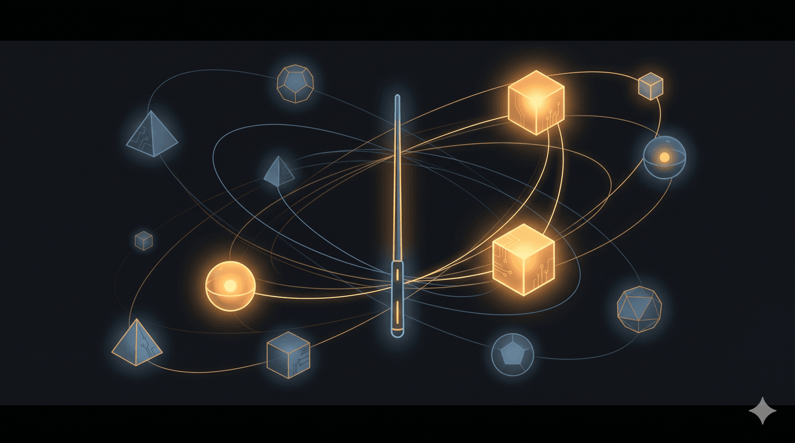

Thằng cháu sắp vào đại học. Năm ngoái nó hỏi có nên theo computer science không. Mình bảo thôi dẹp, qua học phần cứng đi. Giờ Việt Nam đã đủ điều kiện để theo đuổi bán dẫn nghiêm túc rồi. NVIDIA, (có thể là) TSMC sớm muộn gì cũng sẽ phải làm gì đó với Việt Nam. Biết đâu vài năm nữa lại có luôn kiểu Vietnam Semiconductor Manufacturing. Nói vui vậy thôi, nhưng cơ hội là có thật. Mình gợi ý nó chọn hướng hybrid, nửa cứng nửa mềm cho đỡ bị kẹt - không biết sắp tới có còn cần người biết code nữa không hay AI nó mạnh quá rồi giờ cần người biết nghĩ thôi. Giờ nó đang apply đi Đài Loan học, hy vọng ổn.
Và bây giờ đúng là thị trường vẫn cần người biết Software Engineering, bằng chứng:
Sau một thời gian thả cửa hạ tầng, có vẻ mấy ông lớn như Microsoft, Google, AWS bắt đầu siết cloud. Và khi mấy ông đó siết, OpenAI với Anthropic cũng quay sang siết… cổ người dùng.
Sáng nay mình chỉ nhờ sửa vài chi tiết UI, làm một cái handoff, tổng cộng có 3 chat, mà đã ngốn 30%. Giờ Sonnet 4.6 Medium-High ăn credit gần như Opus 4.6 High của một tháng trước.
Tức là mỗi session giờ chưa chắc làm xong nổi 1 feature. Hoặc lắm thì đủ một vòng “full stack” từ UI/UX, implement, QA/test, audit tới handoff. Đang xây nửa cái cửa thì điện cúp. Không vào nhà được, mà lui ra cũng không xong.
Codex cũng thế. Tháng trước còn êm ru, mình còn ngồi khoe với bạn là xài tẹt ga, không phải nghĩ.
Ngày xưa AI credit còn được tính kiểu điện năng tiêu hao. Giờ nó được tính như đất hiếm.
Như vậy có một vài việc phải làm mà nó tốn kém kiểu này, thì người biết code vẫn có lợi, có mấy cái cơ bản như Git/bash/terminal biết vẫn tốt hơn, tự xử được, quan trọng nhất là hiểu được concept của version control, chứ không phải chỉ commit rồi push.
Chưa kể nếu Engineering mindset không có, thì sao biết đứa (AI) nào làm tốt hay không. Anway, dưới đây là vài ý kiến cá nhân sau một thời gian làm việc với bọn “thiếu tình người” này, mình chia việc lại như này:
1. Reasoning, architecture, master plan: Opus 4.6 + GPT 5.4. Nhưng kinh nghiệm của mình là đừng plan với Opus, làm gì cứ xào với GPT chán chê đi, rồi mới qua dựng kiến trúc với Opus. GPT nó vẫn có cái “Human sense” tốt hơn Claude, brainstorm với nó rồi narow down, đẩy cái tinh gọn qua Opus để tiết kiệm nhưng đúng bản chất.
2. UI/UX, implementation: Mình + Sonnet 4.6 + Codex. Hoặc Lovable nếu đầu bài đủ rõ. Còn brainstorm thì Stitch của Google cũng được, nhưng chỉ nên coi như đồ tham khảo, đừng dại bê nguyên vào xài. Nói thật, riêng khúc UI/UX thì não với mắt thẩm mỹ của mình vẫn đáng tin hơn AI. Nói chung khúc này các kỹ năng UI/UX/Product Analysis là quan trọng, vibe coder không có cái này, đó là lý do ngay cả khi nó làm cách nào đó publish được lên app store, nhưng mình tải xuống đi qua 2-3 bước onboarding là mình xóa app liền - lỗi căn bản và kinh điển (võ đoán 90% bọn app mới bị mấy cái tương tự như này).
3. UI/UX, product analysis: GPT 5.4 cho đỡ xót tiền. Cần research hoặc reasoning qua lại thêm thì quăng qua Gemini Pro. Thằng Gemini của Google làm mấy bài UI/UX khá ổn. Nhưng nhớ là mình vẫn làm chủ cái này, nó không biết cái này đâu. GPT phân tích hình ảnh khá ổn, giao cho nó file ảnh nó đọc vanh vách nhe, hay thiệt, không cần Opus hay Sonnet trong cái này đâu, 2 thằng này yếu, khả năng đọc hình ảnh còn khá kém. Đưa screenshots nếu không brief kỹ, nó sẽ đoán bậy và implement trớt quớt. Thằng GPT thì đưa cho nó nó như có junior PA/UX designer bên cạnh luôn nhe.
4. Security: Mình chưa thử Gemini nhiều ở mảng này, nhưng GPT reasoning cũng khá ổn. Có điều đừng nhồi nó quá tải. Mấy task kiểu này chỉ nên load 30 đến 40% thôi. Đừng để lên 80%. Đám AI này mà ảo giác thì nó viết bậy như thật, tới lúc debug chỉ muốn đập bàn. Nguồn: trust me bro.
Mà thôi, nghe nói Claude nó mới ra tính năng này mà mới áp dụng cho doanh nghiệp thôi, sắp tới mấy con khác cũng có tính năng này thôi, mà giá rẻ hơn, hi hi, chứ review code không mà tính $25/lần thì ai chơi lại Anthropic, anh vắt cổ chày ghê quá.
5. Refactor: Antigravity của Gemini Pro chạy khá ngon. Có vẻ Google mạnh tay ở mảng này, nhất là mấy thứ dính UI/UX. Nhưng nhìn chung refactor thì con nào cũng làm được. Cứ ưu tiên con nào ít tốn tiền nhất, hoặc chạy phối hợp. Tất nhiên thường mình chạy bằng Codex cho tiết kiệm, nhưng thi thoảng vẫn làm một cú với Gemini, khá hài lòng khi… giao việc vặt.
6. Debugging: 70% Claude + 30% Codex. Opus hay Sonnet đều ổn. Có Chrome extension nên chạy nhanh. Nhưng giờ nó trúng ngải heo rồi, ăn token kinh khủng. Có bữa nó phi vào infinity loop xong nuốt sạch quota của mình. Khiếu nại lên Anthropic thì im như chùa Bà Đanh. Còn thằng Codex nhiều khi nó xà quần, nó hết xà quần nó xà qua áo, mũ, tất, quần sịp, quay lại vẫn lỗi. Nhưng thằng Claude đôi khi cũng y chang, thôi thì phải núm 2 thằng nó vào kết hợp khi gặp bug kiểu này (chủ yếu là đến từ việc implement conflict với nhau, do mình brief AI không rõ ràng)
7. Có một món nhiều người ít xài, nhưng mình thấy cực kỳ đáng tiền, là GitHub + Markdown, kiểu Obsidian hoặc Notion, để viết architecture, rules, task planning, master plan, implementation notes, prompt hay dùng, log, lock các stage quan trọng để khỏi rollback ngu, rồi handoff các kiểu.
Mình có thói quen này từ hồi còn làm ở mấy công ty tech, có đụng tới knowledge management, nên quen kiểu Personal Wiki. Hay gọi bằng cái tên nghe rất kêu là “second brain”. Nghe thì oách đấy, cũng có sách, có bác sĩ YouTube nói suốt. Nhưng bỏ cái tên màu mè đi, bản chất nó chỉ là chỗ để đầu óc bạn đỡ phải nhớ những thứ đáng lẽ không nên nhớ. Ai muốn xem kiểu structure thì có thể nghía repo knowledge-os mình chụp trong hình.
Nhưng nói cho cùng, tất cả những thứ ở trên mới chỉ là phần mình ngồi khoe kỹ năng làm conductor, hay bọn engineer thích gọi sang mồm là orchestrator. Nghe cũng buồn cười. Bên âm nhạc thì người điều khiển dàn nhạc gọi là conductor. Qua tới dân tech thì tự nhiên biến thành orchestrator cho có mùi enterprise. Đúng là bọn đờ iên điên.
Nhưng chuyện quan trọng nhất vẫn không nằm ở đó. Không quan trọng bạn có thể tâng bóng 1000 lần với một ngón tay chống đẩy hay không, quan trọng là vào sân bạn có thể chuyển cơ hội thành bàn thắng (Xuân Son) hay ngược lại, chuyển bàn thắng thành cơ hội (Tiến Linh): User đâu? Tiền đâu? Ô la la, “users không có không sao, tui làm vì đam mê”, “O la la, chủ tới thu tiền nhà, đừng nói tui có ở nhà”.
Bạn có thể có 800 cái tool trong tay, nhổ lông nách một cái là ra thêm tool mới như Tôn Ngộ Không biến hóa. Nhưng cuối cùng có thỉnh được kinh hay không thì vẫn phải có người đi bán. Không thì chính bạn phải làm luôn Tam Tạng Ngộ Không. Vừa đi xin vua Đường rót vốn cho chuyến đi, vừa phải biết múa gậy (biết code, biết build).
Nói ngắn gọn, vấn đề bây giờ không còn là “có gì để làm không”.
Vấn đề khó hơn nhiều là: giữa một đống kiếm, làm sao tự biến mình thành kiếm khách.
“Ai bỏ tiền ra cho mày làm?” ahihi, Einstein chưa từng nói như vậy.
🔍 Phân tích bài viết
📌 Tóm tắt ý chính
Bài là chia sẻ thực chiến của một developer về cách đối phó với chi phí AI tăng vật giá bằng cách phân công đúng model cho đúng task. Luận điểm cốt lõi: không có một AI nào làm tất cả — mỗi công cụ có điểm mạnh riêng, và người orchestrate chúng vẫn phải có nền tảng kỹ thuật thực sự. Quan trọng hơn: biết xào nấu với AI giỏi là cần, nhưng câu hỏi sống còn vẫn là “ai bỏ tiền cho mày làm?” — không có user/khách hàng thì mọi workflow đều vô nghĩa.
🗺️ Mindmap
💡 Insight & Góc nhìn đa chiều
Xu hướng ẩn sau bề mặt: Các nền tảng AI đang chuyển dần từ mô hình “hạ tầng thả cửa” (thu hút user) sang “khai thác có lượng” (maximize ARPU). Đây là dấu hiệu toàn ngành AI đang tới giai đoạn trưởng thành — sản phẩm không còn bán theo kiểu “lỗ để chiếm thị phần” nữa.
Ai được lợi: Developer biết kết hợp nhiều AI khác nhau (multi-model workflow) được lợi thế — họ có thể giữ chi phí thấp hơn so với người phụ thuộc 1 platform. Anthropic và OpenAI được lợi doanh thu.
Ai bị thiệt: Vibe coder — những người cậy AI 100% mà không hiểu kỹ thuật — sẽ bị chẹn cả hai đầu: chi phí leo thang và không thể debug khi AI ra lỗi.
Điều ẩn: Bài không nói rõ, nhưng đây thực chất là một bài học về đa dạng hóa rủi ro vendor (vendor diversification) — nguyên tắc quản lý chuỗi cung ứng đang được áp dụng vào việc chọn AI tool.
⚖️ Phản biện
1. Bài vẫn thiếu góc nhìn về chi phí ẩn: Phân công nhiều AI khác nhau giảm credit nhưng tăng cognitive load. Việc chuyển context giữa Opus, GPT, Gemini, Codex cho mỗi task khác nhau tạo ra overhead thầm lặng — một loại “chi phí” khó tính hơn tiền.
2. Đánh giá UI/UX taste quá tự tin: Tác giả bảo “não và mắt thẩm mỹ của mình vẫn đáng tin hơn AI” — nhưng đây là affirmation bias. AI đang tiến nhanh vào design, và taste cá nhân không phải lúc nào cũng đồng nghĩa với “user-centered design” thực sự.
3. Lời khuyên bán dẫn cho thằng cháu có thể sai timing: NVIDIA/TSMC đến VN là khả năng, nhưng semiconductor fab yêu cầu ecosystem rất phức tạp (nước sạch, điện ổn định, hạ tầng cao cấp). Học ngành bán dẫn ở VN 2026 với hy vọng có việc tốt sau 4 năm là một canh bạc chứ không phải kế hoạch chắc chắn.
❓ Câu hỏi mở
-
Khi AI credit trở thành đất hiếm, liệu các công ty sẽ đưa ra giới hạn chi phí AI cho từng developer giống như budget marketing — và điều đó sẽ thay đổi văn hóa làm việc như thế nào?
-
Multi-model workflow đòi hỏi kỹ năng cao để vận hành hiệu quả — vậy liệu nó sẽ tạo ra một tầng lớp developer ưu tú mới (“AI orchestrators”), hay chỉ là kỹ năng tạm thời trước khi có một AI duy nhất làm tất cả giỏi hơn?
-
Engineering mindset được đề cao, nhưng rốt cuộc nó được dạy hay chỉ được tích lũy qua kinh nghiệm? Nếu không dạy được, thì “biết code” hay “biết nghĩ” mới thực sự là barrier to entry?
🇻🇳 Liên hệ Việt Nam
-
Thị trường lao động IT: Developer VN đang đối mặt với nước đôi — outsourcing truyền thống bị ép giá, nhưng AI-augmented developer có thể làm được nhiều hơn với nhân lực ít hơn. Nếu học đúng cách orchestrate AI, một developer VN có thể cạnh tranh với team của nước khác.
-
Cơ hội bán dẫn: NVIDIA mở văn phòng tại VN (2024–2025), Samsung đầu tư R&D, FPT đi hắng chip. Xu hướng là có thật, nhưng số lượng việc làm chất lượng cao trong ngành này ở VN vẫn rất ít so với quy mô sv theo học — cạnh tranh sẽ gay gắt.
-
Kiến thức quản lý (second brain/wiki): VN có văn hóa làm việc rất ít viết document. Các công ty nào ứng dụng knowledge management đúng lúc này sẽ có lợi thế hơn hẳn khi onboard AI agent vào làm việc.
📖 Giải thích thuật ngữ
- AI Credit / Token: Tiền tệ để “trả lương” cho AI. Mỗi lần AI đọc và viết, nó “nuốt” một lượng token. Giá token tăng giống giá xăng tăng.
- Orchestrator: Người điều phối. Trong công trường: tổ trưởng phân việc cho thợ xây, thợ điện, thợ ống — không tự làm hết nhưng biết ai giỏi việc gì.
- Vibe coder: Người copy code từ AI rồi paste vào dự án mà không hiểu tại sao nó chạy. Giống thợ xây đắp gạch theo bản vẽ nhưng không biết mác bê tông phải bao nhiêu.
- Refactor: Sửa lại code đã chạy cho gọn hơn, dễ bảo trì hơn — không đổi chức năng. Giống việc đến cuối tuần dọn xưởng, sắp xếp lại dụng cụ cho khoa học.
- Version control (Git): Hệ thống lưu trữ được mọi lần chỉnh sửa. Giống như lưu ảnh chụp từng bước lưu trữ bản vẽ khuôn, có thể quay lại bất kỳ phiên bản nào.